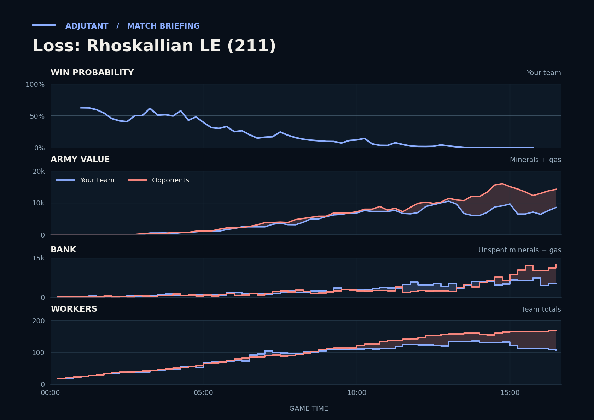

Result inferred from higher terminal team supply because no explicit replay result was available.
Loss
Cached narration uses different analysis inputs (facts, engine notes, prompts or model settings). It has not been regenerated for this report.
Loss. NaviDR's bigger economy left Scallop's fourth facing an army 3.6x larger, with no static defence there.
Why
13:01–14:03: TakeTheTip fought both opponents alone before Scallop joined; their army fell to about 1,300 by 13:59.
15:52: Unseen: NaviDR had 52 more workers than Scallop and had made far more army.
15:53–16:17: Scallop, with no static defence at the fourth, killed almost none of NaviDR's army and lost 3 Command Centers.
Try next game
Scallop: When you place a Command Center at a new base, start 3 Missile Turrets beside it, since you had none at the fourth.
TakeTheTip: If both enemy armies hit your fourth and Scallop's army isn't on your screen, fall back to the natural's 3 Spore Crawlers and ask Scallop to join.

Written by claude-sonnet-5-5 from a different set of analysis inputs.
Current engine analysis: turning points, whole game, habits
Debrief
Loss. Review 6:59–8:12: you lost a fight (2,125 lost, 1,300 killed), including 4 SCVs of Scallop's. The biggest fight came at 14:45–16:40 (12,250 lost, 5,700 killed).
Team MMR 3803 vs 3662 against NaviDR (Protoss), AAillan (Terran). Starting win chance 63%.
Try next game
You took this fight with 2,475 of army against 3,800; wait until your combined army matches theirs, or fight next to your own defenses. Most of your army died to Void Rays. Scallop: Marines and Vikings beat Void Rays.
Scallop: you had 4,733 unspent at 15:45; add production or a base whenever unspent passes 1,000. Check: under 1,000 at every minute mark after 8:00.
TakeTheTip: you had 3,435 unspent at 11:45; add production or a base whenever unspent passes 1,000. Check: under 1,000 at every minute mark after 8:00.
Turning points
6:59–8:12: you lost a fight (2,125 lost, 1,300 killed), including 4 SCVs of Scallop's. Win chance 15% to 12%.
Scallop lost 4 SCVs between 6:59 and 8:12, to Void Rays (3 kills), Marines (1).
TakeTheTip lost 2 Drones, to Marines (2 kills).
You killed 5 enemy workers (5 of them NaviDR's), with Banshees (5 kills).
Fighting: you lost 500 of army and killed 800 of theirs. Going in, your armies were worth 2,475 against their 3,800.
Your losses: 10 Zerglings, 1 Banshee; killed mostly by Marines (10 kills), Void Rays (1).
Their tech finished in this window: NaviDR Fleet Beacon 7:10.
What moved the win chance: tech -4%, economy +3%, spending -2%
Try: You took this fight with 2,475 of army against 3,800; wait until your combined army matches theirs, or fight next to your own defenses. Most of your army died to Void Rays. Scallop: Marines and Vikings beat Void Rays.
Across the whole game
Enemy Void Rays (they made 18) destroyed 9,650 of your value (16 Hydralisks, 11 Missile Turrets, 9 Widow Mines). Counters built after they first struck at 5:34: Scallop made 22 Missile Turrets; TakeTheTip made 62 Hydralisks, 10 Spore Crawlers.
Scallop had 4,733 unspent at 15:45.
TakeTheTip had 3,435 unspent at 11:45.
TakeTheTip lost 38 Hydralisks (5,700) over the game, mostly to Marines (16), Void Rays (16).
TakeTheTip was supply blocked for 50s between 6:00 and 8:00 (121s in the whole game).
Compared with your other games
Scallop was banking 790 at 6:00; in your wins usually 435. Across your earlier games, when it was like this you won 26% (46 games) vs 52% otherwise (177 games).
Scallop had been supply blocked for 50s by 6:00; in your wins usually 29s. Across your earlier games, when it was like this you won 38% (48 games) vs 49% otherwise (175 games).
Engine debrief-v3-0.7. Losses count only units killed by an enemy. Win chance comes from a model trained on your earlier games.
Earlier replay bookmarks
Earlier moments to revisit, considering both teammates. Each row groups nearby losses. Engine and chart windows may include other simultaneous losses. Values are minerals + gas. These bookmarks do not grade the decisions.
Local losses: Scallop lost 2 Missile Turrets, 2 SCVs (300); TakeTheTip lost 1 Lair, 4 Overlords, 2 Drones, +14 others (1,675); duo total 1,975; opponents lost 12 Marines, 1 Medivac (800)
Other recorded losses in this window: Scallop lost 1 Banshee (250); opponents lost 5 Probes, 1 Photon Cannon, +1 others (500)
Local losses: Scallop lost 1 Banshee (250); opponents lost 1 Missile Turret, 2 SCVs, +1 others (250)
Local losses: Scallop lost 1 Missile Turret, 1 SCV (150); opponents lost 16 Marines, 3 Medivacs, +1 others (1,600)
Other recorded losses in this window: Scallop lost 1 Missile Turret (100); TakeTheTip lost 4 Hydralisks (600); opponents lost 2 Marines (100)
Replay map
◎ Historical player start · ◇ Resource cluster · ■ Completed grounded hall · □ Unfinished hall · ✕ Recorded hall ending Dashed rings show recorded events during the selected interval, not simultaneous live state. Symbols and player labels accompany colors.
Hall state
Unplaced halls
Recorded events and source evidenceExact map, registration and resource-site sources
Positive resource-site occupancy is recorded hall presence. Mining, vision, routes, local army availability and map control are unknown. The MMR-conditioned model estimate is unchanged. This panel cannot establish what caused a probability drop.
Older V2 evidence cards
Evidence-first cards are generated independently from the predictive model. Each card separates replay evidence, interpretation, past-only comparison, and an adjustment to test.
Action
Scallop sustained an unspent bank while army investment stayed low
Interpretation
Across 6 sampled checkpoints, Scallop retained a sizeable unspent bank while income stayed above the positive threshold, supply headroom stayed above the threshold, observed live production-structure count was positive, and loss-adjusted current plus in-progress army investment growth stayed low. The live-structure count may include addons, flying structures, or morphing structures; it is infrastructure evidence and does not establish queue occupancy or current training capacity. Cumulative army-loss fields are included so replacement investment is not mislabeled as no conversion. The replay shows an opportunity to test spending timing; it does not show why the bank was held.
Adjustment to test
At a comparable checkpoint next game, set a spending trigger: convert part of the bank into army or in-progress army investment while keeping a small supply buffer, then review the next checkpoint for lower bank and higher investment.
replay_fact Scallop's cumulative combat-army loss value was 626 at 555s and 876 at 630s (delta +250). at 10:30
replay_fact Scallop's current plus in-progress army investment was 3650 at 555s and 3400 at 630s (delta -250). at 10:30
replay_fact Scallop's income was 2283 at 555s and 2138 at 630s (delta -145). at 10:30
replay_fact Scallop's loss-adjusted current plus in-progress army investment growth was +0 (raw investment delta -250 plus cumulative army-loss delta +250; adjusted swing 0). at 10:30
replay_fact Scallop's observed live production-structure count was 9 at 555s and 12 at 630s (delta +3). at 10:30
replay_fact Scallop's supply headroom was 7 at 555s and 16 at 630s (delta +9). at 10:30
replay_fact Scallop's unspent resources was 1364 at 555s and 1552 at 630s (delta +188). at 10:30
Past-only comparison
24 comparable prior wins; median loss-adjusted current plus in-progress army investment change +1625 at matched clock endpoints. Support: 24. Comparable replay IDs: Multiplayer/Rhoskallian LE (84), Multiplayer/Rhoskallian LE (85), Multiplayer/Rhoskallian LE (90), Multiplayer/Rhoskallian LE (92), Multiplayer/Rhoskallian LE (93), Multiplayer/Rhoskallian LE (95), Multiplayer/Rhoskallian LE (97), Multiplayer/Rhoskallian LE (100), Multiplayer/Rhoskallian LE (103), Multiplayer/Rhoskallian LE (104), Multiplayer/Rhoskallian LE (110), Multiplayer/Rhoskallian LE (116), Multiplayer/Rhoskallian LE (121), Multiplayer/Rhoskallian LE (126), Multiplayer/Rhoskallian LE (129), Multiplayer/Rhoskallian LE (133), Multiplayer/Rhoskallian LE (136), Multiplayer/Rhoskallian LE (137), Multiplayer/Rhoskallian LE (139), Multiplayer/Rhoskallian LE (141), Multiplayer/Rhoskallian LE (143), Multiplayer/Rhoskallian LE (151), Multiplayer/Rhoskallian LE (153), Multiplayer/Rhoskallian LE (160).
Provenance
Baseline replay IDs: Multiplayer/Rhoskallian LE (84), Multiplayer/Rhoskallian LE (85), Multiplayer/Rhoskallian LE (90), Multiplayer/Rhoskallian LE (92), Multiplayer/Rhoskallian LE (93), Multiplayer/Rhoskallian LE (95), Multiplayer/Rhoskallian LE (97), Multiplayer/Rhoskallian LE (100), Multiplayer/Rhoskallian LE (103), Multiplayer/Rhoskallian LE (104), Multiplayer/Rhoskallian LE (110), Multiplayer/Rhoskallian LE (116), Multiplayer/Rhoskallian LE (121), Multiplayer/Rhoskallian LE (126), Multiplayer/Rhoskallian LE (129), Multiplayer/Rhoskallian LE (133), Multiplayer/Rhoskallian LE (136), Multiplayer/Rhoskallian LE (137), Multiplayer/Rhoskallian LE (139), Multiplayer/Rhoskallian LE (141), Multiplayer/Rhoskallian LE (143), Multiplayer/Rhoskallian LE (151), Multiplayer/Rhoskallian LE (153), Multiplayer/Rhoskallian LE (160)
Retrospective replay-state association; it does not establish causation or what was knowable during play. Cancellations, tech savings, and army position or visibility are not reconstructed from these state totals. Reference windows are one per unique replay/series, strictly earlier than the target, explicit-result wins only, and use endpoints at or before each target endpoint within the configured clock tolerance; this is clock-only context, not a full pre-window state match.
P(win) is an MMR-conditioned model estimate. Economy and Army Position compare the duo to historical positions at similar game times; they are not model-contribution lanes.
Raw State Comparisons
Observed tracker values, not race-normalized scores. Duo and opponent totals are shown alongside TakeTheTip and Scallop so the normalized lanes above can be checked against the underlying army, economy and bank quantities.
Observed Combat Outcomes
Positive bars favor the duo; negative bars favor the opponents. Each bar summarizes the preceding 15 seconds at a sampled boundary; selected-window summaries exclude future events. These observations do not prove the correct alternative decision.
Factual Replay Timeline
These milestones are replay facts synchronized to the selected window. They are context, not claims about what caused the result.